The Secret History of Russian Verbs
Department of Slavic Languages & Literatures
University of Kansas
www.menzenski.com/slides-kucrees-2015


Goals of this Talk
- Describe the category of 'Intensive-Resultative' verbs in Russian
- Sketch out a theoretical model which accounts for their behavior
Russian Verbs are Complicated
Russian Intensive-Resultative verbs are some of the most interesting in the language, and can pack a lot of meaning into a single word. Compare:
- zagovorit’sja 'become absorbed in conversation' (cf. govorit’ 'speak')
- izolgat’sja 'lie to the point of becoming an incorrigible liar' (cf. lgat’ 'lie')
- dorabotat’sja 'work to the point of an adverse result' (cf. rabotat’ 'work')
Some Types of Intensive-Resultatives
| do- -sja | 'perform an activity to the point of negative consequences' |
| ot- -sja | 'avoid something undesirable or dangerous by
engaging in the activity' 'free oneself from an activity by ending it' |
| pro- -sja | 'return to a normal state by ending an activity'
'perform an activity to the point of ruining oneself or losing one's money/property' |
| iz(o)- -sja | 'acquire a habit or permanent characteristics through the repeated performance of a negative activity' |
| o-/ob(o)- -sja | 'due to awkwardness or imprecision, execute an
activity incorrectly' 'get used to, adapt oneself to an activity' |
| pri- -sja | 'get used to an activity involving a certain entity by the prolonged continuation or repetition of that activity' |
| s(o)- -sja | 'reach harmony/concord in the performance of a
joint activity' 'reach an understanding with someone through an activity' |
| pod(o)- -sja | 'curry someone's favor by performing an activity' |
| v(o)- -sja | 'get the hang of an activity, get used to performing an activity, become accustomed to an activity to the point of a propensity for it' |
From Rutkowska (1981).
Building Intensive-Resultatives
The preceding examples give some clue about the structure of these verbs: they're formed with both a prefix and a suffix:
- za-govorit’-sja 'become absorbed in conversation'
- izo-lgat’-sja 'lie to the point of becoming an incorrigible liar'
- do-rabotat’-sja 'work to the point of an adverse result'
Structure of Intensive-Resultatives
The suffix -sja (/-s’) used in the formation of intensive-resultative verbs also serves as a marker of reflexivity.
On odevaetsja 'He dresses himself'
On odevaet sebja 'He dresses himself' (emphatic)
On odevaet rebenka 'He dresses his child'
These Verbs do Actually get Used
Classifying Events
Vendler (1957) describes four fundamental situation types (states, activities, accomplishments, and achievements).
Following Comrie (1976) and Smith (1997), a fifth fundamental type (semelfactives) was added to this typology.
Classifying Events
Durative situations have extension in time.
Dynamic situations involve change over time.
Telic situations have a 'natural endpoint' (and are thus 'bounded').
The basic situation types may be described via the combination of these three features (Dickey in press: 339).
| States | Activities | Accomplishments | Achievements | Semelfactives |
| +Durative | +Durative | +Durative | –Durative | –Durative |
| –Dynamic | +Dynamic | +Dynamic | +Dynamic | +Dynamic |
| –Telic | –Telic | +Telic | +Telic | –Telic |
Category Boundaries are Not Absolute
Compare the following two sentences: (Croft 2012: 54–55)
- I see Mount Tamalpais.
- I reached the crest of the hill and saw Mount Tamalpais.
Which event type does English see belong to?
It appears to be a state in (1) and an achievement in (2).
Event Types in Two Dimensions
Representing basic event types in two dimensions can help resolve the difficulties in analyzing the aspect of see.
We can imagine an event playing out over two dimensions. The horizontal axis (t) represents time, while the vertical axis (q) represents a change in some quality.
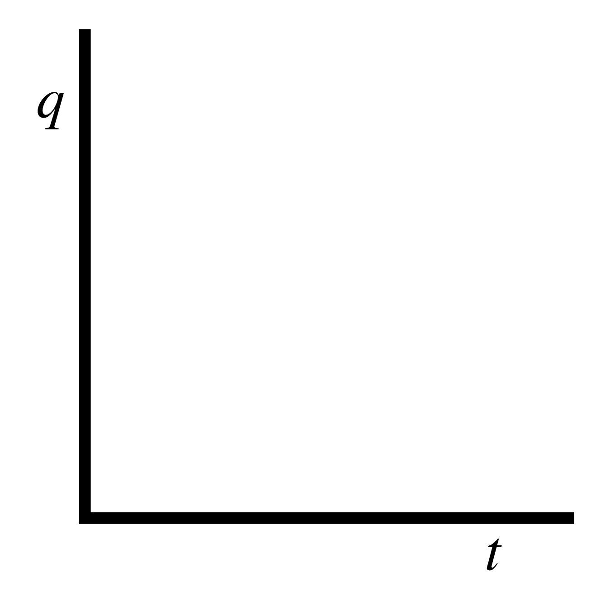Event Types in Two Dimensions
The abstracted aspectual contour for see involves an instantaneous transition from a 'not seen' state to a 'seen' state.
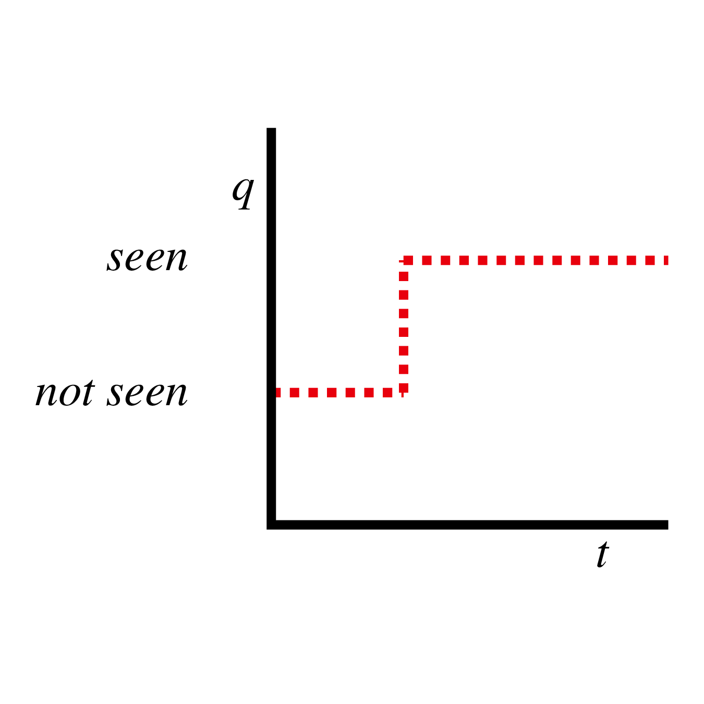Parts of this aspectual contour may be profiled at the level of an individual utterance.
Event Types in Two Dimensions
Here the event is construed as a result state. (A solid line indicates the profiled phase.)
I see Mount Tamalpais.
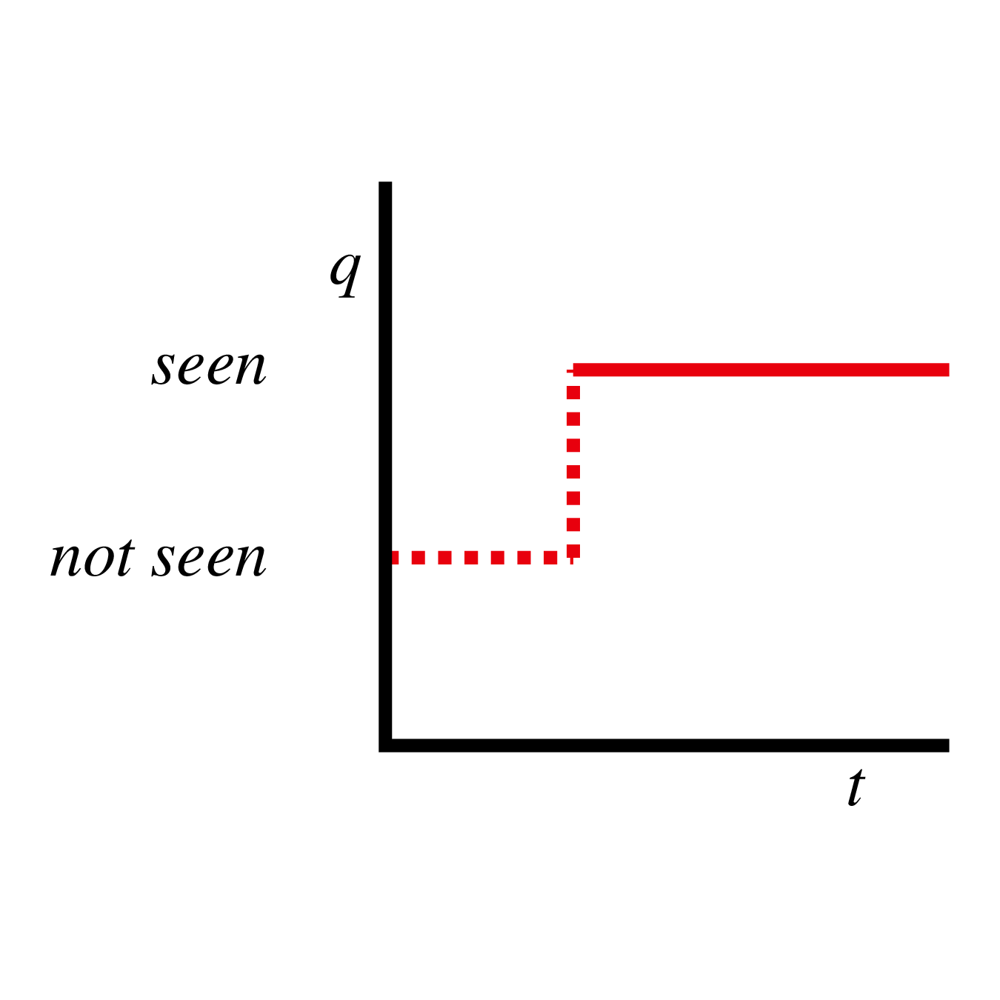Event Types in Two Dimensions
Here the event is construed as an achievement: an instantaneous transition to a result state.
I reached the crest of the hill and saw Mount Tamalpais.
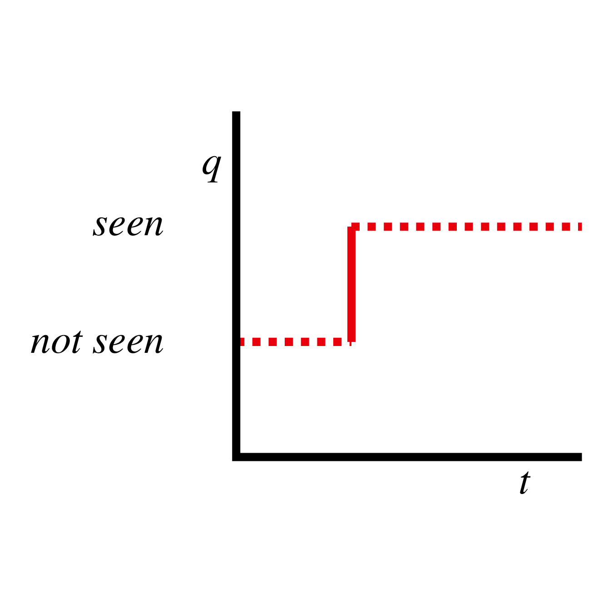Activities in Two Dimensions
Activities are not static, but they're also not progressing towards a goal.
The girls chanted (Croft 2012: 61).
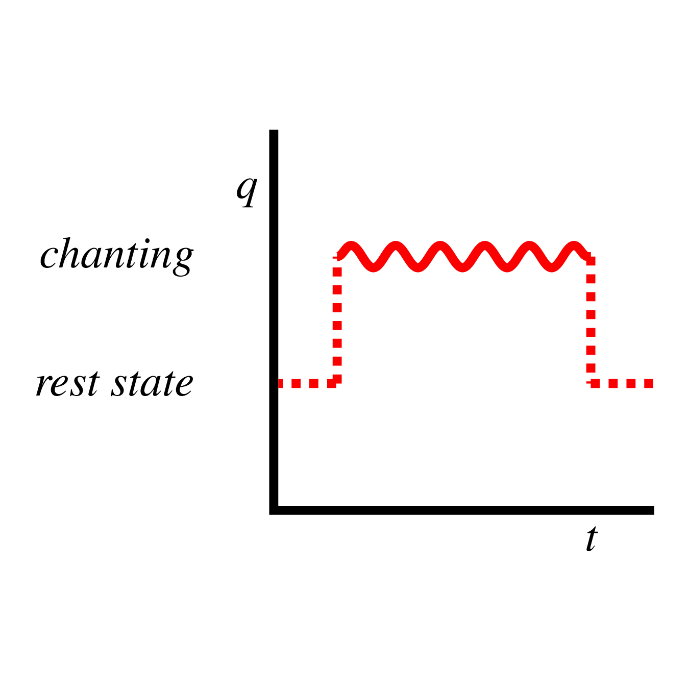Accomplishments in Two Dimensions
Accomplishments do express a change of state, so we see real change in the q dimension.
I ate an apple pancake (Croft 2012: 62).
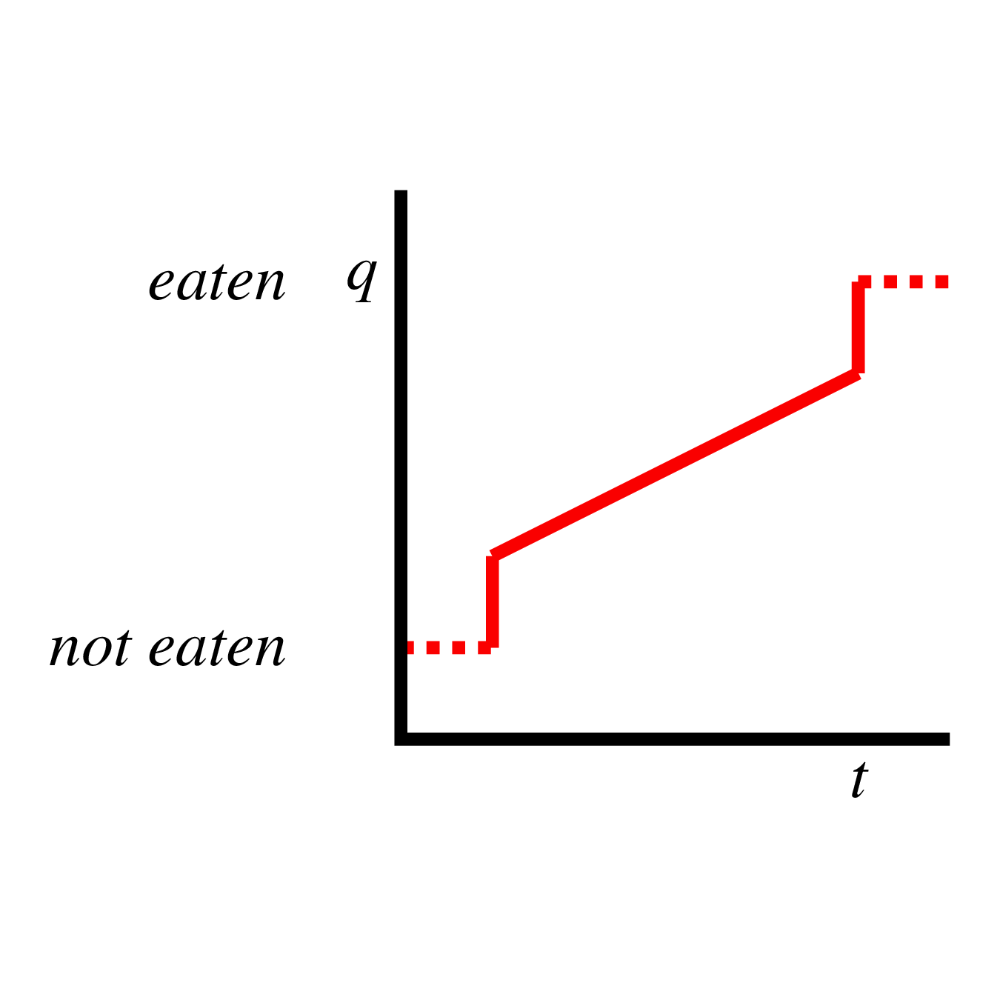The Third Dimension
We've seen that events can be decomposed into two dimensions: one temporal (t) and one qualitative (q).
But further decomposition is possible. Consider I ate an apple pancake again:
The Third Dimension
What's undergoing the change of state in the situation I ate an apple pancake? It's not the subject.
| the subject I | an apple pancake |
| 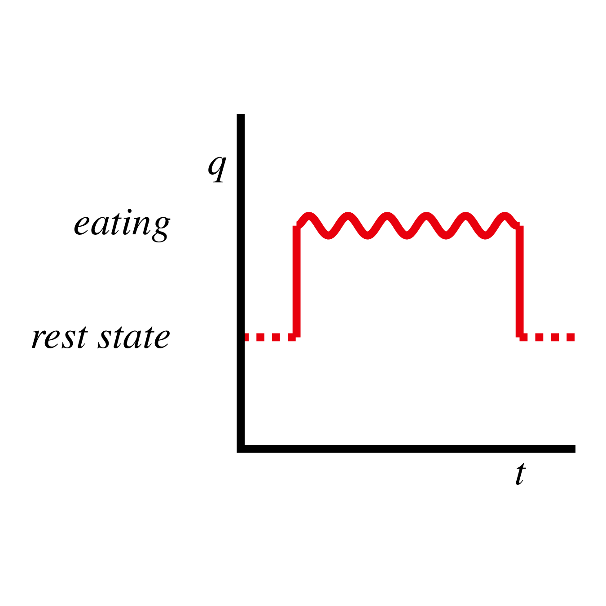 |
The Third Dimension
Events with multiple participants can be further decomposed.
There is a two-dimensional aspectual contour for each participant.
These aspectual contours are linked by a third dimension: causality.
I ate an apple pancake.
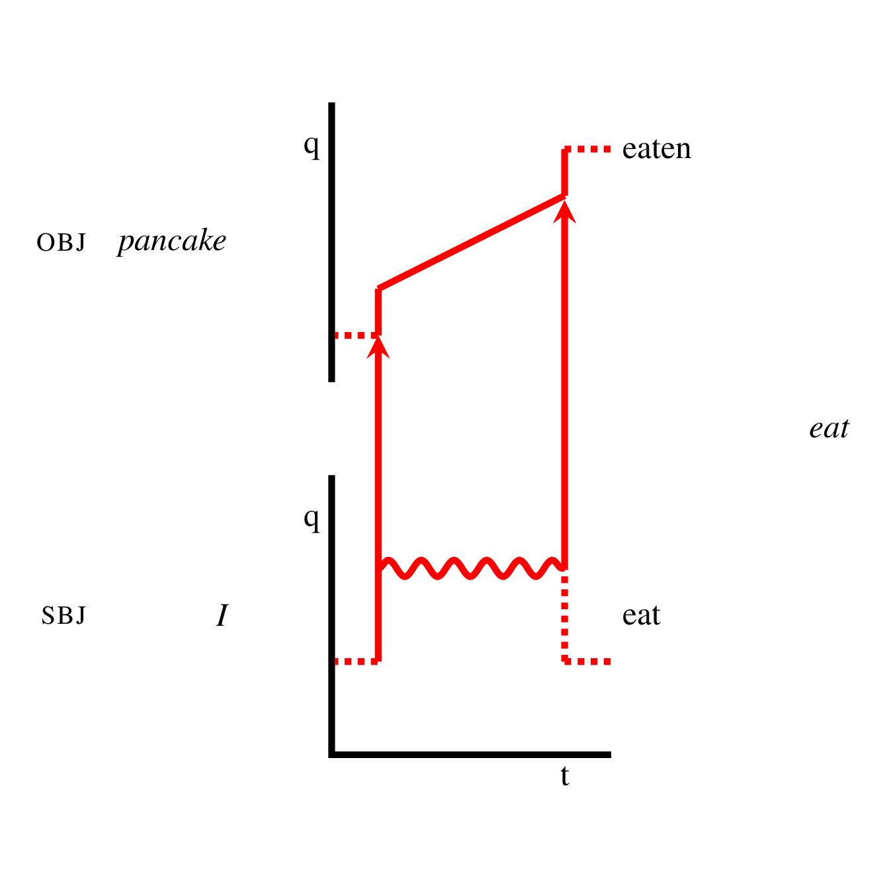
Profiling in Three Dimensions
The same processes of construal and profiling operate in the three-dimensional model.
The profiled phase of the causal chain includes the subject, object, and any oblique arguments in between (e.g., an instrument).
Profiled phases are indicated with solid lines; non-profiled phases with dotted lines.
Sue broke the coconut for Greg.
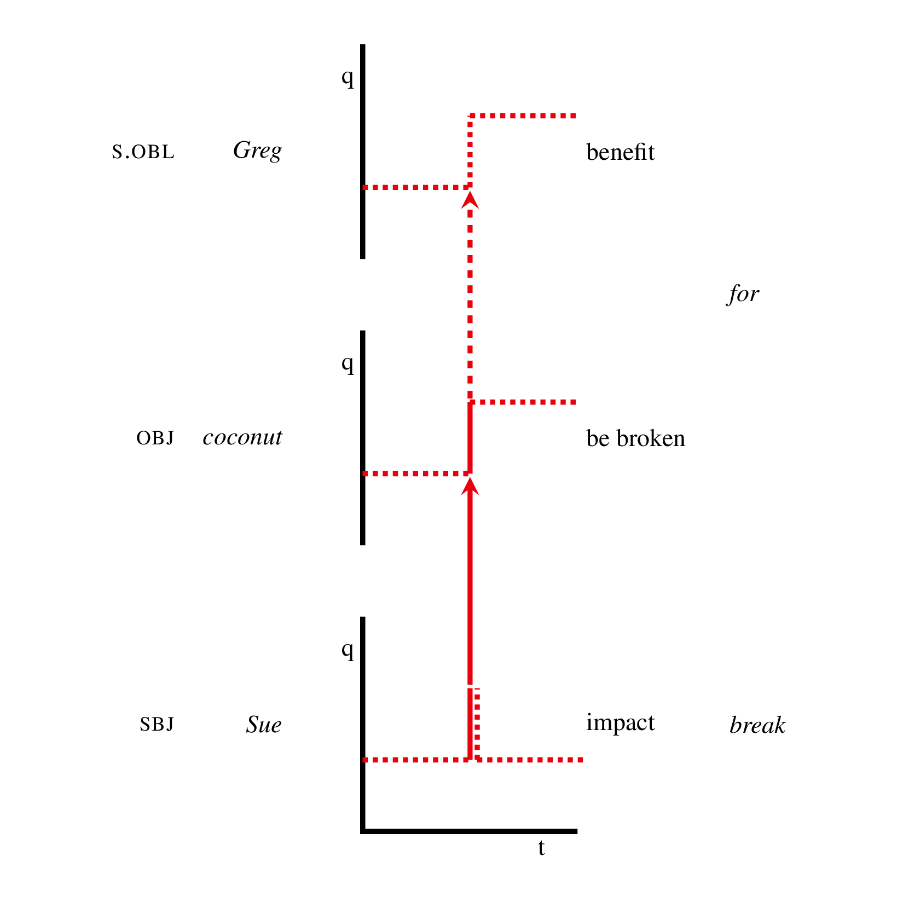
But Wait:
What does all this have to do with Russian Intensive-Resultative verbs?
The Theory
Events may be construed as bounded with respect to any of the three dimensions t, q, or c.
t-boundedness signals an event delimited in time, but not construed as leading to a result state.
q-boundedness signals an event delimited by the arrival of a canonical result state, which enables the continuation of the current causal chain.
c-boundedness signals an event delimited by the arrival of a non-canonical result state, which signals a deviation from the current causal chain.
Boundedness and the Russian Perfective
t-boundedness in Russian is most commonly indicated lexically with delimitative po-, e.g., popisat’ 'write for a while'.
q-boundedness is most commonly expressed lexically with a natural perfective or 'lexical' perfective prefix, e.g., napisat’ pis’mo 'write a letter' or perepisat’ 'rewrite'.
I argue that c-boundedness is freqently expressed lexically by intensive-resultative constructions, e.g., dopisat’sja 'write to the point of adverse consequences'.
Causal Chains and Reflexives
Human behavior is goal-oriented, and this goal-orientedness is reflected in language.
The goal of writing a letter is not really to complete the letter (Dickey 2006: 9). Letter-writing is one step taken toward a larger goal: establishing communication, requesting help, expressing thanks, etc.
Actions taken towards these larger, volitional, intentional goals, involve participants other than oneself.
После этого я написал письмо в америкаскую ассоциацию хот-роддеров (NHRA), в котором рассказал о нашем клубе и попросил рекомендацию для участия в финских гонках. (RNC)
After that I wrote a letter to the American association of hot-rodders (the NHRA), in which I told about our club and requested a recommendation for participation in Finnish races.
Causal Chains and Reflexives
If we consider only the causal dimension (the c-axis), we see a causal chain (Langacker 1991: 217):
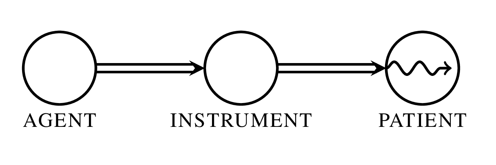Each participant 'acts on' the next.
Canonicity and the Causal Chain
If the participants are distinct from from one another, the causal chain proceeds without difficulty.
I ate an apple pancake (with a fork).
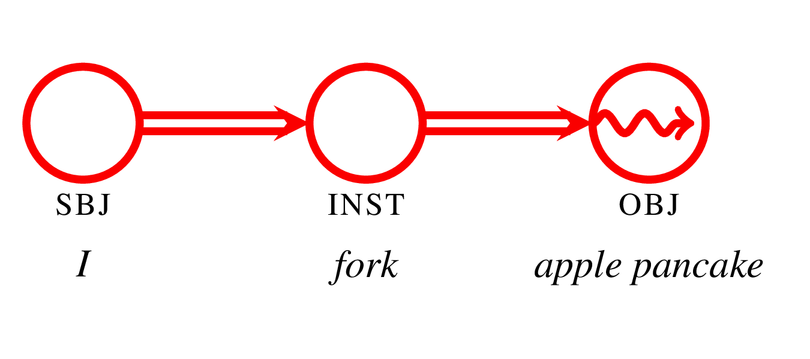Canonicity and the Causal Chain
But if two syntactic roles are filled by the same participant, things get messy.
I dressed myself in black (clothing).
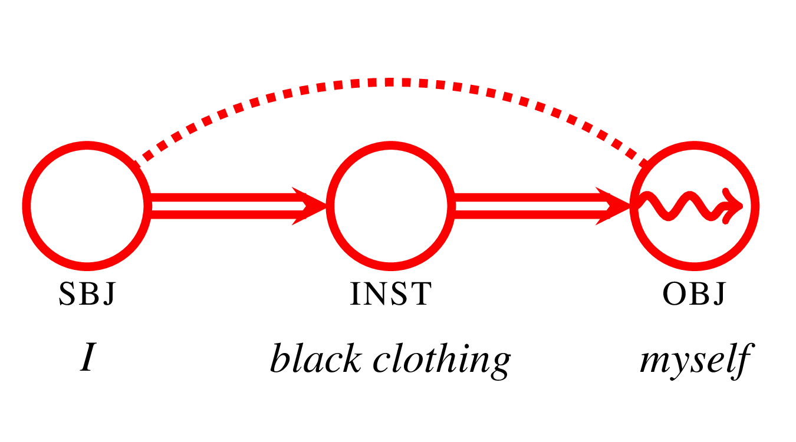Canonicity and the Causal Chain
The canonical left-to-right progression of the causal chain is interrupted by a reflexive construction.
In -sja constructions, "the causal chain of events starts and ends with the subject-referent" (Gerritsen 1990: 11).
We can propose a semantic shift: the meaning of non-canonicity which is secondary in a 'true reflexive' construction has become the primary meaning of -sja.
That is, -sja signals that the canonical causal chain model does not apply in the current context.
Или до того дошутился, что сам забыл, что хотел сказать? (RNC)
Or have you joked to the point that you yourself have forgotten what you wanted to say?
In a canonical speech situation, speakers don't forget what they're about to say.
Parallels with English
Tatevosov (2009) compares Russian intensive-resultatives to English resultative constructions:
-
Turisty naguljalis’
'By walking, the tourists achieved a state of being satisfied.' - The tourists walked themselves tired.
Is this a fair comparison?
Yes and no. Croft (2012: 321–342) describes a crosslinguistic pattern of "fake reflexive resultative" constructions.
Parallels with English
But compare the following:
| Russian | English |
|---|---|
| Turisty naguljalis’. | The tourists walked themselves tired. |
| Turisty naelis’. |
*The tourists ate themselves tired. ??The tourists ate themselves full. |
Russian intensive-resultatives don't specify the result state explitly, but English fake reflexive resultatives have to.
Conclusions
Russian intensive-resultative verbs express non-canonicity of result.
This meaning of non-canonicity represents a semantic extension from the core 'subject-focus' meaning of -sja.
References
Comrie, Bernard. 1976. Aspect:
An Introduction to the Study of Verbal Aspect and Related
Problems.
Cambridge
Textbooks in Linguistics.
Cambridge: Cambridge University Press.
Croft, William. 2012.
Verbs: Aspect and Causal Structure.
Oxford: Oxford University Press.
Dickey, Stephen. 2006. Aspectual
pairs, goal orientation, and po- delimitatives in
Russian. Glossos 7.
Dickey, Stephen. In press. Lexical
and grammatical aspect. The Routledge Handbook of
Semantics,
ed.
by Nick Riemer, 338–354, New York. Routledge.
Gerritsen, Nelleke. 1990. Russian Reflexive Verbs: In Search
of Unity in Diversity. Studies in Slavic and
General
Linguistics 15. Amsterdam: Editions Rodopi B.V.
Langacker, Ronald W. 1991. Concept,
Image, and Symbol: The Cognitive Basis of Grammar.
Cognitive
Linguistics
Research 1. Berlin: Mouton de Gruyter.
Rutkowska, Maria. 1981. Nie znane
polszczyźnie rosyjskie prefigowane derywaty odczasownikowe z
elementem
-sja typu doležat’sja, priest’sja.
Monografie slawystyczne 43. Wrocław: Polska
Akademia Nauk.
Smith, Carlota S. 1997. The
Parameter of Aspect. Dordrecht: Kluwer Academic
Publishers.
Tatevosov, Sergei. 2009. Building
intensive resultatives. Paper presented at Formal Approaches
to
Slavic Linguistics:
18th Meeting, Ithaca, New York, 15
May. Available at
http://darwin.philol.msu.ru/staff/people/tatevosov/intensive_resultatives.pdf.
Vendler, Zeno. 1957. Verbs and times.
The Philosophical Review
66.143–160.